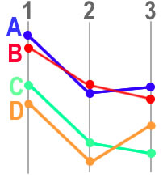

The Profile Filter selects spots that have a similar expression profile to some `target' Spot.
An expression profile is the sequence of changes between expression levels of a spot across a series of Measurements. In a time series for example, the profile might be that the expression level rose between 't=0' and 't=1' and then fell from 't=1' to 't=2' and rose from 't=2' to 't=3'.
The Profile Filter finds the spots with the most similar profile to the selected `target' Spot. Two comparisons metrics are provided: 'Distance' and 'Direction and Distance'.
As with all filter plugins, closing the plugin's window deactives the filter (but iconifying it does not).
On the left of the panel is a list of all Measurements in the current data. You can select two or more of the Measurements for inclusion in the profile.
| Note: Selecting more than one item in the list is done using the "SHIFT" and "CTRL" keys in conjunction with mouse clicks. "SHIFT-click" selects everything between the click point and the previous click, and "CTRL-click" toggles the clicked item. |
On the right of the panel is a list of all Spots, select one of these to act as the `target' Spot. You can use drag-and-drop to transfer a Spot from another window.
Below the two lists is a text field for selecting how many of the nearest profiles to allow through the filter and a dropdown list for adjusting the similarity metric.
The similarity metric is the calculation that is used to quantify the similarity between two profiles. Three different metrics are supported in this plugin:
| Distance: | the sum of the squared differences between values |
| Slope: | the sum of the differences between the first derivatives of the values |
| Direction: | a score generated by comparing direction changes |
The three metrics are illustrated in the following example in which there are 4 spots (A,B,C and D) with values in 3 Measurements (1,2 and 3):
|
 |
Using the Distance metric, spots A and B are most similar. This is because the sum of of the absolute differences between corresponding pairs of values is smallest for these two profiles.
Formally:
distance_metric(A, B) = abs(A1 - B1) + abs(A2 - B2) + abs(A3 - B3)
distance_metric(A, C) = abs(A1 - C1) + abs(A2 - C2) + abs(A3 - C3)
.....
where abs() is the absolute function: abs(-X) = X
With the Slope metric, spots A and C are most similar. This metric calculates the sum of the differences of the first derivatives of the values, i.e. the slopes of the two line segments (the one joining Measurements 1 and 2 and the other one joining Measurements 2 and 3). The profile with the smallest sum is regarded as the most similar.
Formally:
slope_metric(A, B) = abs( (A2-A1) - (B2-B1) ) + abs( (A3-A2) - (B3-B3) )
slope_metric(A, C) = abs( (A2-A1) - (C2-C1) ) + abs( (A3-A2) - (C3-C3) )
.....
This metric therefore chooses lines which have similar (but not neccessarily identical) behaviours in terms of the changes between Measurements
The final metric, Direction compares only the direction of the slopes of the lines joining the Measurements. A 'score' is generated by comparing each pair of line segments, if they go in different directions then 1 is added to the score. The most similar profile is the ones with the lowest score. In the above example, spots A and D are the most similar because they both go "down, up" (spots C and B both go "down,down").
| Arguments |
select
measurements
target_spot_tag
target_spot_value
n_spots
metric
|